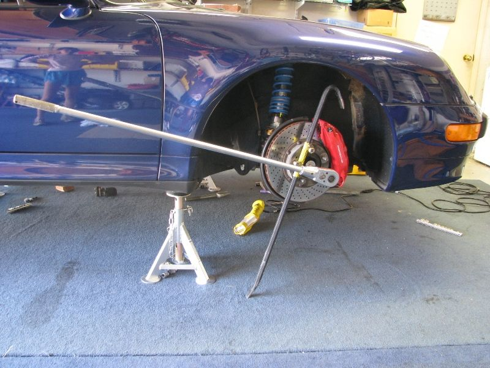

-
The fill plug in my 71C is seized. I've tried heat and penetrating oil but I can't get it to budge. Is there an alternative I can use to fill it to the correct level? I filled it through the shifter hole before installing the shifter, but it had a small leak so I wanted to top it off and found the plug was stuck. Anyone have any advice?Prius… because Pretentious wouldn't fit across the back of the car…
Cheap, Fast, Reliable - pick any two
My 1986 Turbo Build -
are you sure you used the right tool?
My Build Thread -
I've taken the shifter off and poured the fluid through there, as long as you know the capacity. And on my t5 I forced a smaller socket onto the bolt and now it's there for life, but that's because it was rounded off.
"Let's play Battleship! There's enough Z's for that.."
My thread thingy: http://z31performance.com/showthread…ep-Zed-84Zed31 -
I've always drained trans through drain plug and refilled through shifter with FSM required capacity. One snap ring for me is easier than trying to find a good angle to crank that fill plug loose if I don't have the car jacked way up.Usual Z31 suspect: Garage Queen (aka broken)

-
I know I could drain and refill, but I was trying to avoid having to buy another 2 quarts of Redline. The fluid in it is brand new as I just filled it less than a month ago and the car hasn't been driven since then. I guess I could try draining it into a clean container and re-using what's in it.
I forgot to add, it's also not as easy as a snap ring. I have an aftermarket shifter in it so I'll have to unbolt the whole shifter assembly from the transmission.Prius… because Pretentious wouldn't fit across the back of the car…
Cheap, Fast, Reliable - pick any two
My 1986 Turbo Build -
so if the fluid is new and only a month old, why change it?
As for your shifter, drill and tap in a fill plugMy Build Thread -
I don't want to change it, i want to top it off. It was leaking and I don't know how much fluid is in it now.862sik wrote: so if the fluid is new and only a month old, why change it?
As for your shifter, drill and tap in a fill plug
That's not a bad idea on the fill plug though. I'll have to look into that if I pull the shifter again.Prius… because Pretentious wouldn't fit across the back of the car…
Cheap, Fast, Reliable - pick any two
My 1986 Turbo Build

Copyright © 2006–. All rights reserved. Privacy Policy